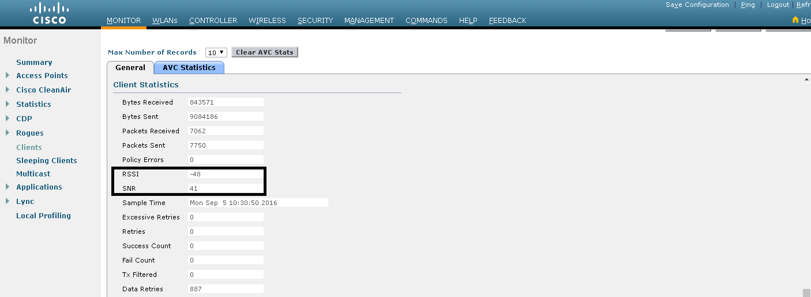
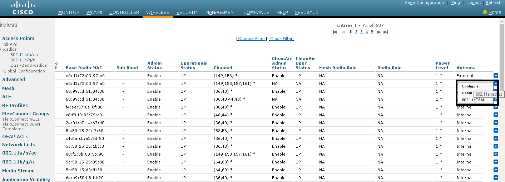
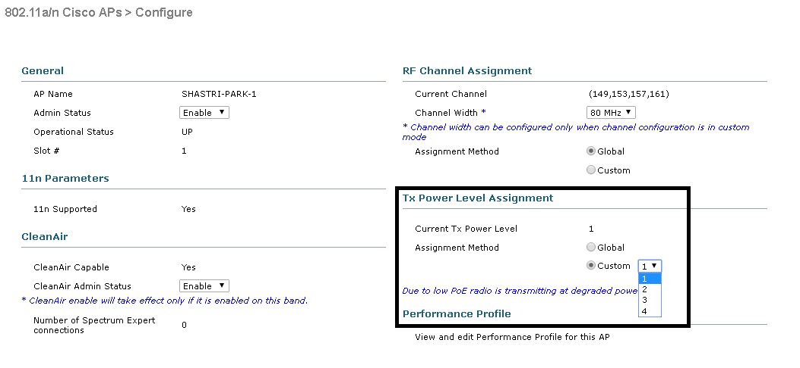

Common terms used in Wireless Communications
-
dB (Decibel) - The Decibel function conveniently represent very large to very small value on the linear scale using
logarithms to compare one absolute measurement to another. It was originally developed to compare sound intensity levels,
but it applies directly to power levels too. One of these values is often a standard reference value,
in which case the decibel is used to express the level of other value relative to this reference.
dB=10(logP2-logP1) or dB=10.log(P2/P1)
P2 represent the source of interest (Whose power is to be compared),
P1 represent the source of comparison or reference value.
Log is in base of 10.
Important dB facts to remember
- A value of 0dB means that the two absolute power values are equal.
- A value of 3dB means the power value of interest is double the reference value; a value of -3dB means the power value of interest is half than power value of reference value.
- A value of 10dB means the power value of interest is ten times the reference value; a value of -10dB means the power value of interest is one tenth the reference value[1].
- dBm - dBm or decibel-milliwatts is an electrical power unit in decibels (dB), referenced to 1 milliwatts (mW). So, when the reference value is taken as 1mW then the dB value becomes dBm. Both the dB and dBm are one and the same thing and gives same result. The difference lies in the reference value i.e. P1. When P1 is just another power source having the power not equal to 1mW then the value is dB and when the P1 is power source having 1mW of power then the dB becomes dBm.
- Antenna Gain - A relative measure of an antenna's ability to direct or concentrate radio frequency energy in a particular direction. The measurement is typically measured in dBi (Decibels relative to an
isotropic radiator) or in dBd (Decibels relative to a dipole radiator). This is explained below:
- dBi (dB-isotropic) - Just like the transmitter and receiver power levels; wireless engineers need to compare the power of antennas. To achieve this goal, a reference antenna was created or assumed with 1 large dot which radiates in all directions like sphere. It can be used as reference to compare actual antennas. This theoretical antenna is called isotropic antenna therefore the scale used to compare the powers that antennas radiate compared to an isotropic antenna is called dBi.
- dBd (dB-Dipole) - Some wireless engineers use the existing antenna as reference in place of isotropic antenna. This antenna is called dipole antenna. The scale used to compare the power that antennas radiate compared to dipole antenna is called dBd.
Relationship b/w dBi and dBd
dBi=dBd+2.14 - RSSI (Received Signal strength indicator) -
RSSI is a measure of the power level that a RF client device is receiving from an access point.
It is a measurement of how well wireless device can hear a signal from an access point. It is often expressed in dB.
RSSI is usually the negative value. Closer to 0, the better or the higher the RSSI the better the signal.
Acceptable signal strengths[2]:
-30dBm=amazing
-67dBm=very good
-70dBm=okay
-80dBm=not good
-90dBm=unusable
-100dBm=No Service
-
SNR (Signal to Noise ratio) - It is a ratio value that evaluates the signal based on noise that is seen.
SNR comprised of two values:- – Signal (RSSI)
- - Noise (Any unwanted/non-informative signal)
SNR is measured as positive value between 0 and 120.The closer to 120 the better.
SNR (dB) = Power of Signal (dB) – Power of Noise (dB)Noise level is amount of interference in wireless signal, so lower the value; the better. Noise value is between 0 and -120. If the noise value is close to -120 then there is little or no interference at all.
Any SNR above 20 is good[3].
To check the RSSI and SNR login to Cisco WLC
Go to Monitor > Clients > General > Client Statistics.
Below snapshots shows the Good and Low RSSI and SNR client is receiving.

Fig-1 Low RSSI and SNR
Fig-2 Good RSSI and SNR
- TPC (Transmit Power Control Algorithm) -
The TPC algorithm, run at a fixed ten-minute interval by default, is used by the RF Group Leader to determine the APs’ RF
proximities and adjust each band’s transmit power level lower to limit excessive cell overlap and co- channel interference.
Whenever there is co-channel interference between two AP's in close proximities then TPC algorithm will run and lower down the power levels
automatically to avoid the cell overlap and interference.
TPC will adjust the Transmit power up or down to meet the required coverage level indicated by the TPC Threshold.
TPC versions:
- TPCv1 - Coverage Optimal Mode
- TPCv2 - Interference Optimal Mode
TPCv2 is suitable for dense networks. In this mode, there could be higher roaming delays and coverage hole incidents.
With TPCv1, typically, power can be kept low to gain extra capacity and reduce interference. Transmit power is dynamically adjusted with the goal of minimum interference.
- Power level assignment Level - It can be automatic, on demand or fixed.
Automatic - TPC can run automatically every 10 minutes i.e. 600 seconds.
On demand - TPC can be invoked to run once and then the power level settings will be fixed till the next TPC run.
Fixed - It can fix the power level globally for the bands on all the Access points.
The power level ranges from 1 to 8.
1=maximum transmit power
8=minimum transmit power.
- Maximum and minimum power level assignment - maximum and minimum power levels applied to all bands (2.4GHz and 5GHz) on
which the TPC is being configured. It means that all the bands transmit at maximum and minimum configured value.
It ranges from -10dBm to 30dBm.
- Power Assignment Leader - It is the Controller on which TPC is configured and it will run the TPC algorithm on all the associated access points.
- Last Power Level Assignment - It shows the last time when TPC runs.
- Power Threshold - Since at least 3 AP's needed to run the TPC. So, if the fourth AP is heard by the other three AP's at the Power threshold then TPC algorithm will run.
- Power Neighbor Count - The minimum number of neighbors an access point must have for Transmit power control algorithm to run.
Fig-3
Fig-3 shows the TPC parameters for 802.11a band.
Power level settings per AP per radio level can be changed as shown in fig-4 and fig-5.
Go to Wireless > Radios > 802.11b/g/n or 802.11a/n/ac > select the AP whose power is to be changed manually by hovering the mouse over the Blue drop down tab > Configure > Assignment method > Custom > value from 1 to 8.
Fig-4
Fig-5
References:
- http://www.cisco.com/c/en/us/support/docs/wireless-mobility/wireless-lan-wlan/23231-powervalues- 23231.html
- http://www.metageek.com/training/resources/understanding-rssi.html
- https://supportforums.cisco.com/discussion/10954591/snr-and-rssi-values
- http://knowledge.digi.com/articles/Knowledge_Base_Article/dBi-vs-dBd-summary
- http://www.speedguide.net/faq/what-is-wireless-rssi-level-418
- https://rscciew.wordpress.com/2015/01/05/configure-transmit-power-control/
- http://www.cisco.com/c/en/us/td/docs/wireless/controller/technotes/8- 3/b_RRM_White_Paper/b_RRM_White_Paper_chapter_0101.pdf
- http://www.l-com.com/content/Article.aspx?Type=N&ID=9475